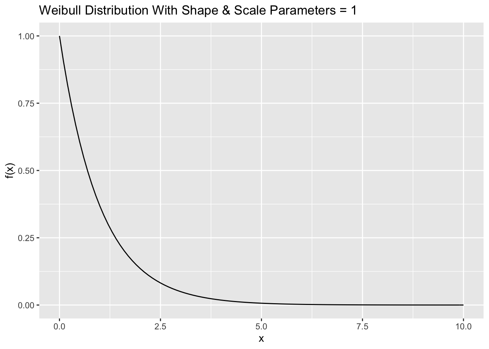

Chapter 3 Stochastic processes
Evolution of a random process is at least partially random, and each run the process leads to potentially a different outcome. It is of great interest to understand or model the behaviour of a random process by describing how different states, represented by random variables \(X\)’s, evolve in the system over time. Just as probability theory is considered as the study of mathematical models of random phenomena, the theory of stochastic processes plays an important role in the study of time-dependent random phenomena. Stochastic processes can be used to represent many different random phenomena from different fields such as science, engineering, finance, and economics.
A stochastic process is a collection of random variables \(\{ X_t : t \in T\}\) defined on a common sample space, where
\(t\) is a parameter running over some index set \(T\), called the time domain.
The common sample space of the random variables (the range of possible values for \(X_t\)) denoted by \(S\) is called the state space of the process.
The set of random variables may be dependent or need not be identically distributed.
Techniques used to study stochastic processes depend on whether the state space or the index set (the time domain) are discrete or continuous.
3.1 Classification of stochastic processes
Stochastic processes can be classified on the basis of the nature of their state space and index set.
Discrete state space with discrete time changes : No claims discount (NCD) policy: A car owner purchases a motor insurance policy for which the premium charged depends on the claim record. Let \(X_t\) denote the discount status of a policyholder with three levels of discount, i.e. \(S = \{0,1,2\}\) corresponding to three discount levels of 0%, 20% and 40% and the time set is \(T = \{0,1,2,\ldots\}\). Both time and state space are discrete.
Discrete state space with continuous time changes : In a health insurance system, an insurance company may classify policyholders as Healthy, Sick or Dead, i.e. \(S = \{H, S, D\}\). The time domain can be taken as continuous, \(T = [0,\infty)\).
Continuous state space with continuous time changes : Let \(S_t\) be the total amount claimed by time \(t \in T\) where \(T = [0,\infty)\) and the state space is \(\mathbb{R}\). Both time and state space are continuous. Some continuous time stochastic process taking value in a continuous state space will be studied in Risk Analysis and Credibility course.
Continuous state space with discrete time changes : The outcomes of the above claim process \(S_t\) could be recorded continuously, however, we may choose to model the values only at discrete time, for e.g. the total claim amounts at the end of each day. This may due to the limitation of the measurement process (for e.g. expensive to measure). Hence, the time domain is discrete but the state space is continuous.
In case that claim amounts are recorded to the nearest baht or in satang, i.e. discrete state space, we could also approximate or model the process by using a discrete state space, rather than continuous.
3.2 Random walk: an introductory example
One of the simplest examples of a stochastic process is a simple random walk. Consider a simple model of the price of a stock measured in baht. For each trading day \(n = 0,1,2, \ldots\), the stock price increases by 1 baht with probability \(p\) or decreases by 1 baht with probability \(q = 1-p\). Let \(X_n\) denote the stock price at day \(n\) and \(X_0 = 100\). This simple model is called a simple random walk.
In the simple random walk process, time is discrete (as observed at the end of each day) and the state space is discrete. The stochastic model has an infinite number of outcomes known as stochastic realisations or sample paths. A sample path is then just the sequence of a particular set of experiments. Graphs of some stochastic realisations of the simple random walk with \(p = 0.5\) and \(a = 100\) are shown in Figure 1.
Some stochastic realisations of the simple random walk
We can use R to generate sample paths of this random walk.
set.seed(1)
p <- 0.5
Z<- sample(x = c(1,-1), 10, replace = T, prob = c(p, 1- p))
Z## [1] -1 -1 1 1 -1 1 1 1 1 -1# plot(c(100, 100 + cumsum(Z)))
# qqplot(0:10,c(100, 100 + cumsum(Z)))
x <- 0:10
y1 <- c(100, 100 + cumsum(Z))
dat <- tibble(x = x, y = y1)
dat %>% ggplot(aes(x = x, y = y1)) +
geom_line(col = "blue")
A complete description of the simple random walk, observed as a collection of \(n\) random variables at time points \(t_1, t_2, \ldots, t_n\) can be specified by the joint distribution of \(X_{t_1}, X_{t_2}, \ldots, X_{t_n}\), i.e. \[F(x_1, x_2, \ldots, x_n) = \Pr(X_{t_1} \le x_1, X_{t_2} \le x_2, \ldots, X_{t_n} \le x_n).\] However, the multidimensional distribution function cannot be easily written in a closed form unless the random variables have a multivariate normal distribution. In practice, it is more convenient to deal with some stochastic processes via some simple intermediary processes or under some addition assumptions.
In general, a simple random walk \(X_n\) is a discrete-time stochastic process defined by
\(X_0 = a\) and
for \(n \ge1\), \[X_n = a + \sum_{i=1}^n Z_i, \text{ where } Z_i = \begin{cases} 1, & \text{ with probability } p \\ -1, & \text{ with probability } q = 1- p. \end{cases}\]
When \(p = 1/2\), the value of the process increases or decreases randomly by 1 unit with equal probability. In this case, the process is known as a symmetric random walk.
The (intermediary) process \(\{ Z_i : i \in \mathbb{N}\}\) is a sequence of independent identically distributed (i.i.d.) random variables. The process \(X_t\) themselves are neither independent nor identically distributed. This process \(Z_i\) is also known as white noise process.
Example 3.1 Explain why the simple random process \(X_n\) is neither independent nor identically distributed.
Suppose that \(X_0 = 100\). Firstly, we will show that \(X_n\) is not independent. From definition, the process \(X_n\) can be written as \[X_n = X_{n-1} + Z_n.\] That is, the value of \(X_n\) is the previous value plus a random change of 1 or \(-1\). Therefore, the value of the process depends on the previous value and they are not independent. For e.g., \[\Pr(X_2 = 102) > 0 \quad \text{ but } \quad \Pr(X_2 = 102 | X_1 = 99) = 0.\]
The process \(X_n\) cannot be identically distributed. For e.g. \(X_1\) can take the values of 99 and 101, while \(X_2\) can take three different values of 98, 100 and 102.
Example 3.2 Let \[\begin{aligned} \mu &= \mathrm{E}[Z_i] \\ \sigma^2 &= \mathrm{Var}[Z_i] \end{aligned}\] Calculate the expectation (\(\mu\)) and variance (\(\sigma^2\)) of the random variable \(Z_i\).
\[\begin{aligned} \mu &= \mathrm{E}[Z_i] = 1\cdot p + (-1) \cdot q = p - q.\\\end{aligned}\] \[\begin{aligned} \sigma^2 &= \mathrm{Var}[Z_i] \\ &=\mathrm{E}[Z_i^2] - (\mathrm{E}[Z_i] )^2 \\ &= 1 - (p-q)^2 = (p+q)^2 - (p-q)^2\\ &= 4pq. \end{aligned}\]
Example 3.3 Calculate the expectation and variance of the process \(X_n\) at time \(n\).
\[\begin{aligned} \mathrm{E}[X_n] &= \mathrm{E}[a + \sum_{i=1}^n Z_i] = a + n\mu.\end{aligned}\] \[\begin{aligned} \mathrm{Var}[X_n]&= \mathrm{Var}[a + \sum_{i=1}^n Z_i] = n \sigma^2.\end{aligned}\] It should be noted that the variance of \(X_n\) increases with time.
Example 3.4 For the random process, calculate \[\Pr(X_2 = 98, X_5 = 99 | X_0 = 100).\]
The process \(X_n\) must decrease on the first two days, which happens with probability \((1-p)^2\). Independently, it must then increases on another two days and decrease on one day (not necessarily in that order), giving three different possibilities. Each of these has probability \(p^2(1-p)\). So \[\Pr(X_2 = 98, X_5 = 99 | X_0 = 100) = (1-p)^2 \cdot 3 p^2(1-p) = 3p^2(1-p)^3.\]
In what follows, we will see that exact calculations are possible for the simple random walk process. Note also that it is sufficient to understand the behaviour of the random walk when it starts at \(X_0 = 0\).
Example 3.5 For the random process with \(X_0 = 0\), \(X_{2n}\) is always even and \(X_{2n+1}\) is always odd. Based on the binomial distribution, show that \[\begin{aligned} \Pr(X_{2n} = 2m) &= {2n \choose n+m} p^{n+m} q^{n-m}, \quad -n \le m \le n \\ \Pr(X_{2n+1} = 2m+1) &= {2n + 1 \choose n+m+1} p^{n+m+1} q^{n-m}, \quad -n-1 \le m \le n.\end{aligned}\]
Let \(A\) denote the number of \(+1\) and \(B\) denote the number of \(-1\). Then \(A + B = 2n\) and \(X_{2n} = A - B\) (i.e. the position at time \(2n\)). Hence, \[\begin{aligned} \Pr(X_{2n} = 2m) &= \Pr( A - B = 2m) \\ &= \Pr( A - (2n - A) = 2m) = \Pr( 2A - 2n = 2m) = \Pr( A = m + n)\\ &= {2n \choose n+m} p^{n+m} q^{2n-(n+m)}, \quad -n \le m \le n \\ &= {2n \choose n+m} p^{n+m} q^{n-m}, \quad -n \le m \le n.\end{aligned}\]
–>
–>